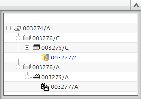

Creating managed copies of simulation data
Use the Clone SIM command to create a managed copy of all model data in the displayed Simulation file in a single operation. You specify the number and revision level for each item revision, creating a duplicate model structure. To clone a Simulation file, display the Simulation file and choose Clone SIM.
|

|
A cloned simulation. The entire data structure (revision C) is duplicated.
Use the Clone FEM command to clone a displayed FEM file. When you clone a FEM, the idealized part is cloned, but the Simulation file is not. To clone a FEM, display the FEM file and choose Clone FEM.
 |